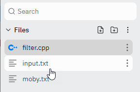

Input Redirection

Input redirection allows you to run a program, and have that program get its input from a file or device, instead of from the keyboard. Your program doesn't need to change at all; it still reads from cin as always.
To see how input redirection works, first, open the file named input.txt by clicking its tab, so you can see what it contains. Then, type this command in the shell:
The input redirection symbol < asks the operating system to first open input.txt and then to connect that to the standard input stream. Now, cat gets its input from the file instead of from the keyboard.
This is text stored in "input.txt".
A second line in input.txt
$
When all of the data has been processed, the prompt returns. (I've colored the output so that the input you type appears in teal, and the output from the command appears in blue.)
 This course content is offered under a
CC
Attribution Non-Commercial license. Content in this course
can be considered under this license unless otherwise noted.
This course content is offered under a
CC
Attribution Non-Commercial license. Content in this course
can be considered under this license unless otherwise noted.